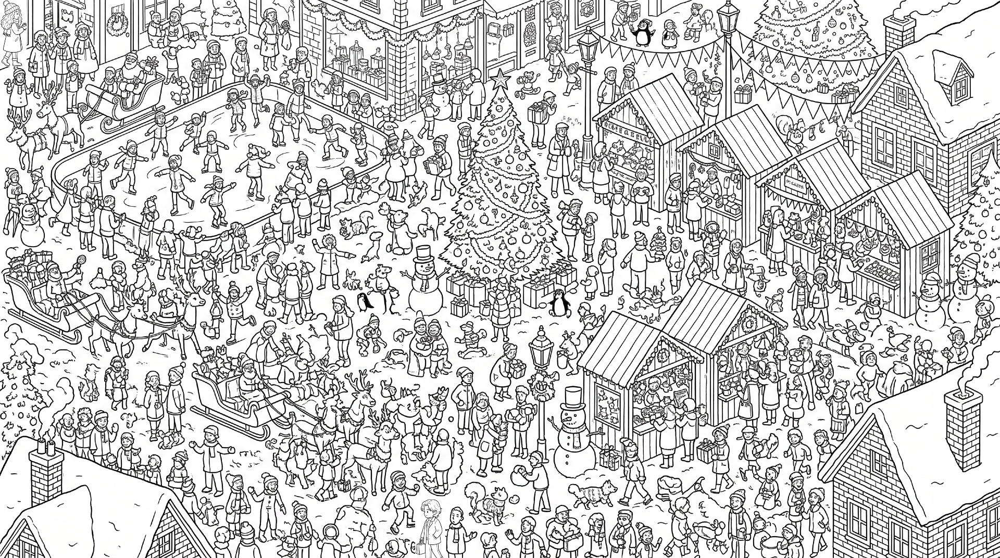

¡Última ronda! Encuentra a Esther y Viktor en este nuevo paisaje.

A encontrar
Dos personajes escondidosPulsa sobre cada personaje para descubrir sus colores.
Desafío completado
Ole y ole, espero que te haya gustado
Por que es muy curioso pensar que con lo grande que es el mundo nos hayamos encontrado tantas veces no?
Porque en un universo tan inmenso espero siempre poder estar a tu lado
Volver al calendario